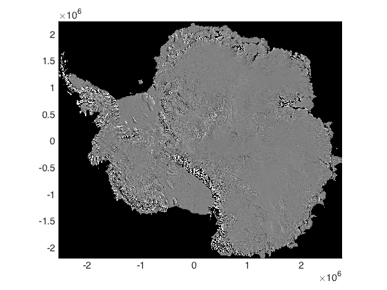
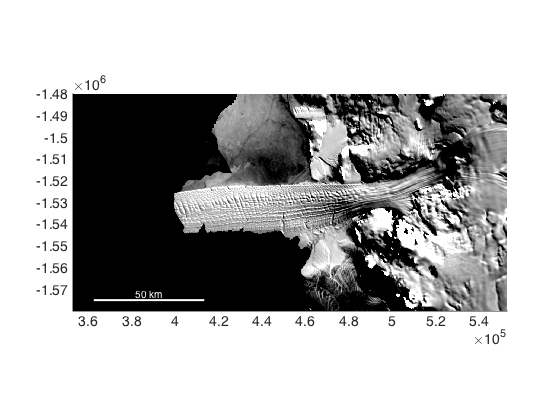
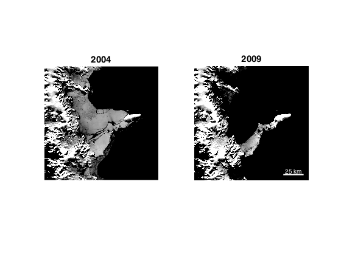
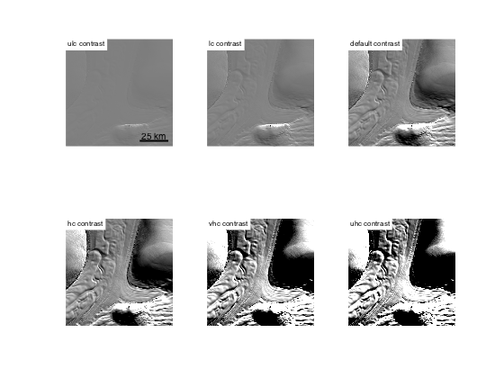
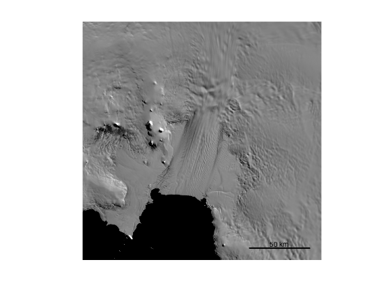
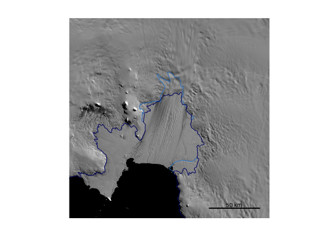
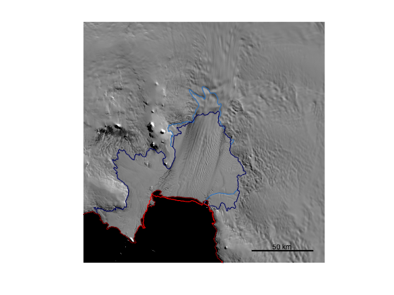
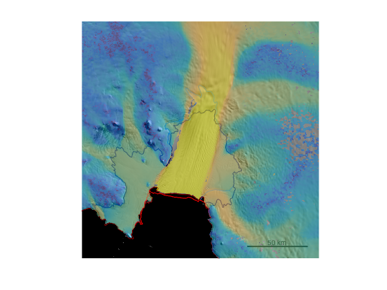

modismoaps documentation
modismoaps initializes a MODIS Mosaic of Antarctica (MOA) image or adds a MODIS MOA to an existing map. This function does NOT require Matlab's Mapping Toolbox. It also does NOT hijack the colormap, so you're free to overlay color-scaled scatter data or semitransparent pcolor data (e.g. ice speed).
Contents
Syntax
modismoaps
modismoaps('gl')
modismoaps('gl','PropertyName',PropertyValue)
modismoaps('coast')
modismoaps('coast','PropertyName',PropertyValue)
modismoaps(...'2004')
modismoaps(...'km')
modismoaps(...'clearocean',true_or_false)
modismoaps(...'contrast',contrastValue)
h = modismoaps(...)Description
modismoaps fills a current map with a MODIS MOA image. If a map is not already open, modismoaps initializes a continent-wide map. Resolution is automatically determined by the size of the map--maps larger than approximately 500 km by 500 km are filled with 750 m resolution data, but small maps are filled with 125 m data.
modismoaps('gl') places a MODIS MOA grounding line.
modismoaps('gl','PropertyName',PropertyValue) formats the grounding line with any line or marker property accepted by Matlab ('linewitdh','color',etc). This grounding line is the break-in-surface-slope determined from the MODIS imagery.
modismoaps('coast') places a MODIS MOA coast line.
modismoaps('coast','PropertyName',PropertyValue) formats the coast line.
modismoaps(...'2004') plots image, grounding line, or coast data from the year 2004. Default year is 2009.
modismoaps(...'km') plots in polar stereographic kilometers rather than meters.
modismoaps(...'clearocean',true_or_false) makes open-ocean image data transparent. The results are not very pretty because sea ice remains, but no mask is distributed with the MODIS MOA datasets. If you'd like to do a better job of masking, use the Bedmap2 icemask, or you can load the MOA grounding line data and use inpolygon, but the latter option will be computationally slow. Default value is false.
modismoaps(...'contrast',contrastValue) specifies a contrast range to scale the grayscale values to. You can enter a range of your own in the form [lowval highval] or you can use a string to specify any of the values listed in the MOA map users' guide
- 'uhc' (ultra-high contrast [15875 16125])
- 'vhc' (very high contrast [15800 16200])
- 'hc' (high contrast [15500 16500])
- 'moa' (nominal contrast [15000 17000])
- 'lc' (low contrast [12000 20000])
- 'vlc' (very low contrast [9000 23000])
- 'ulc' (ultra-low contrast [1 32000])
- NumericRange (any two-element range)
h = modismoaps(...) returns a handle for plotted image or line data.
Installation
This function requires running the modismoa_install script.
Example 1: Continent-wide image
If you don't already have a map open, show a 750 m resolution map of Antarctica like this:
modismoaps
Example 2: Small region image
For small regions, take advantage of high-resolution (125 m) images by zooming before calling modismoaps. The modismoaps function only loads enough data to fill the current map extents:
figure mapzoomps('drygalski ice tongue','mapwidth',[200 100]) modismoaps scalebarps('color','white')
Example 3: Specify a year:
If you ran the whole install script you should have data from 2004 and 2009. The modismoaps function plots 2009 data by default, but you can specify a year like this:
figure subplot(1,2,1) mapzoomps(-64.9,-60.2,'mapwidth',150) modismoaps('2004') title '2004' axis off subplot(1,2,2) mapzoomps(-64.9,-60.2,'mapwidth',150) modismoaps scalebarps('color','w','location','se') title '2009' axis off
Example 4: Specify image contrast
The modismoaps function does a grayscale calibration, then plots the MODIS MOA image as an image object. This keeps the colormap open to overlay other color-scaled data if you wish, but it means you can't plot then tinker with caxis limits. Here's what the different contrast options look like:
figure subplot(2,3,1) mapzoomps('rutford ice stream','mapwidth',100) modismoaps('contrast','ulc') scalebarps('length',25,'location','southeast') axis off text(0,.95,' ulc contrast','units','normalized','backgroundcolor','w','fontsize',8) subplot(2,3,2) mapzoomps('rutford ice stream','mapwidth',100) modismoaps('contrast','lc') axis off text(0,.95,' lc contrast','units','normalized','backgroundcolor','w','fontsize',8) subplot(2,3,3) mapzoomps('rutford ice stream','mapwidth',100) modismoaps % default axis off text(0,.95,' default contrast','units','normalized','backgroundcolor','w','fontsize',8) subplot(2,3,4) mapzoomps('rutford ice stream','mapwidth',100) modismoaps('contrast','hc') axis off text(0,.95,' hc contrast','units','normalized','backgroundcolor','w','fontsize',8) subplot(2,3,5) mapzoomps('rutford ice stream','mapwidth',100) modismoaps('contrast','vhc') axis off text(0,.95,' vhc contrast','units','normalized','backgroundcolor','w','fontsize',8) subplot(2,3,6) mapzoomps('rutford ice stream','mapwidth',100) modismoaps('contrast','uhc') axis off text(0,.95,' uhc contrast','units','normalized','backgroundcolor','w','fontsize',8)
Example 5: Grounding lines and coastlines
The MODIS MOA dataset contains grounding line (break in slope) and coast line data for 2004 and 2009. Let's plot 'em both atop a modismoa image. Start by plotting Pine Island Glacier. I'm specifying low contrast because the default contrast makes a much-too-busy figure:
figure mapzoomps('pine island glacier','mapwidth',200) modismoaps('contrast','lc') scalebarps('location','se') axis off
The modismoaps function accepts line formatting just like Matlab's built-in plot function, so you can use the built-in color names, or you can specify RGB values of any color. To make the RGB specification easy, I've also written a function called rgb, which lets us specify grounding line colors like 'medium blue' and 'dark blue'. Let's make the dark colors indicate 2009 and the medium blue indicate 2004 data:
modismoaps('gl','color',rgb('medium blue'),'2004') modismoaps('gl','color',rgb('dark blue'))
Coast lines can be overlaid in a similar fashion:
modismoaps('coast','r','2004') modismoaps('coast','color',rgb('dark red'))
Pairing with other AMT functions
Because the modismoaps function plots a static image (rather than shades of gray scaled by caxis limits), you can easily other color-scaled datasets. Try the measuresps function from the MEaSUREs plugin to plot ice speed as a semitransparent layer on top of the MODIS MOA image:
h = measuresps('speed','alpha',.5,'log');
Above, you'll notice the semi-transparent ice surface speed layer was placed on top of the grounding lines and scalebar. We should have placed the ice speed layer before overlaying the grounding lines etc, but that wouldn't have been quite as pedagogical, so I suggest this fix: Move the layer to the bottom, then up one via the uistack function:
uistack(h,'bottom') uistack(h,'up')
Citing these Data
When citing MODIS MOA data, please cite the following:
Haran, T., J. Bohlander, T. Scambos, T. Painter, and M. Fahnestock. 2014. MODIS Mosaic of Antarctica 2008-2009 (MOA2009) Image Map 2009. [indicate subset used]. Boulder, Colorado USA: National Snow and Ice Data Center.
Scambos, T., T. Haran, M. Fahnestock, T. Painter, and J. Bohlander. 2007. MODIS-based Mosaic of Antarctica (MOA) data sets: Continent-wide Surface Morphology and Snow Grain Size. Remote Sensing of Environment 111(2): 242-257.
Bohlander, J., T. Scambos, T. Haran, M. Fahnestock, 2004. A New MODIS- based Mosaic of Antarctica: MOA. Eos. Trans. AGU, 85(47), F452.
Greene, C.A., Gwyther, D.E. and Blankenship, D.D., 2016. Antarctic Mapping Tools for Matlab. Computers & Geosciences. http://dx.doi.org/10.1016/j.cageo.2016.08.003
Author Info
This function was written by Chad A. Greene, October 2016. The University of Texas at Austin Institute for Geophysics.